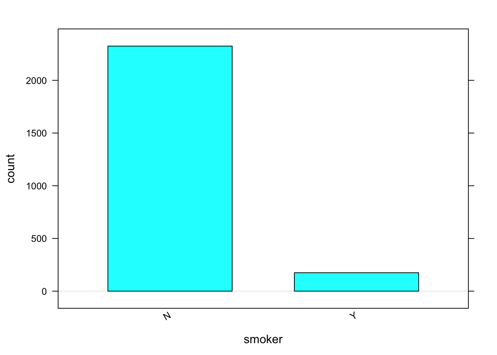

8 R Packages for Teaching and Learning
8.1 Base R vs. Packages for Learning
There are a lot of options in base R, but often they can be clunky and a bit of a challenge for students. Download the Packages for Learning Notebook
Let’s look at an example (you can find the data called KingCounty2011.csv in linked here: In 2001, a sample of 2500 births from King County, Washington contained information on both the mother and the infant at birth.
king<-read.csv("Data/KingCounty2001.csv")Suppose we want to compare the birth weight (bwt) of a baby between mothers who smoke (Y) versus do not smoke (N) (smoker).
In base R, here is what the code would look like:
mean(king$bwt[king$smoker=="Y"]) #smoke[1] 3185.737mean(king$bwt[king$smoker=="N"]) #do not smoke[1] 3431.201How would we calculate the standard deviation as well?
sd(king$bwt[king$smoker=="Y"]) #smoke[1] 583.4798sd(king$bwt[king$smoker=="N"]) #do not smoke[1] 553.8304It quickly becomes cumbersome to do this for multiple summary statistics. So what if there is a better way?
8.2 Package mosaic
The mosaic package was developed by Randall Pruim, Danny Kaplan, and Nicholas Horton. The goal of Project mosiac is to support the learning of R in colleges and universities. Let’s try our previous problem using functions in mosaic.
First, install the package if you haven’t done so already.
install.packages("mosaic")Now, before we load the package, let’s take a peak at the mean() function in base R. What error results?
mean(king$bwt~king$smoker)
argument is not numeric or logical: returning NA[1] NA
What does that error message mean?
Now load the mosaic package and note the message provided when loaded:
library(mosaic)Notice that it states that
The following objects are masked from package:base:
max, mean, min, prod, range, sample, sum
Package Mosaic overwrites several of the base package functions with new functions of the same name to make them adaptable to the formula notation. 
We can now run our mean() function (overwritten by mosaic)
mean(bwt~smoker, data=king) N Y
3431.201 3185.737 Many of the summary statistic functions of base R will now work in function form. mosaic also adds new functions, such as favstats
favstats(bwt~smoker, data=king) smoker min Q1 median Q3 max mean sd n missing
1 N 255 3118.0 3459 3770 5175 3431.201 553.8304 2325 0
2 Y 414 2856.5 3275 3544 4508 3185.737 583.4798 175 0In addition, it allows for some simple graphics that allow faceting:
histogram(~bwt|smoker, data=king)
and easy bar graphs without the need to create a count table:
bargraph(~smoker, data=king)
and overlay summary values:
histogram(~bwt, v=2500, data = king)
8.3 Package ggformula
Just like mosaic, ggformula was written to get students doing powerful visualization quickly, without having to learn the ins and outs of ggplot2 or even base R. While mosaic has some graphing functionality, ggformula serves as an overlay for ggplot2, allowing the user to create quality graphics and to support multivariate reasoning via formulas. To learn more, check out the vignette from the ggformula package.
Install the package and load it into R.
#install.packages("ggformula")
library(ggformula)You can easily “pipe” using the %>% symbol to overlay two graphs and you can use many of the ggplot2 arguments within the ggformula functions. For example:
gf_boxplot(bwt~smoker, data=king) %>%
gf_violin(bwt~smoker, data=king, fill=~smoker, alpha=0.3)Try out a few other plots using the King County birth weight data and ggformula.
To learn more about the pipe %>% in R, read the Pipes chapter in R for Data Science.
8.4 Package infer
The objective of the infer package is to perform statistical inference using an expressive statistical grammar that mimics the tidyverse design framework. The goal is to have students run a hypothesis test by using functions that follow these steps:

infer Grammar for Inference
Install the package if you haven’t done so already.
install.packages("infer")and load the infer package:
library(infer)Let’s look at an example, to compare the mean birth weights for infants born to smokers and non-smokers.
First, let’s calculate the test statistic, what would we want to compare?
king %>%
specify(bwt ~ smoker) %>%
calculate(stat = "diff in means", order = c("Y", "N")) -> d_hatNext we generate data under the null hypothesis and calculate the test statistic under the null hypothesis to determine the “null distribution” of the null hypothesis. What is our null hypothesis?
\(H_0: \mu_{smoker} = \mu_{nonsmoker}\)
\(H_0: \mu_{smoker} \neq \mu_{nonsmoker}\)
king %>%
specify(bwt ~ smoker) %>%
hypothesize(null = "independence") %>%
generate(reps = 1000, type = "permute") %>%
calculate(stat = "diff in means", order = c("Y", "N")) -> null_distFinally, we can visualize the null distribution and p-value. What conclusion should we draw from our inference?
visualise(null_dist) +
shade_p_value(obs_stat = d_hat, direction = "two_sided")You can learn more about the infer package for different tests by reading the infer vignettes.